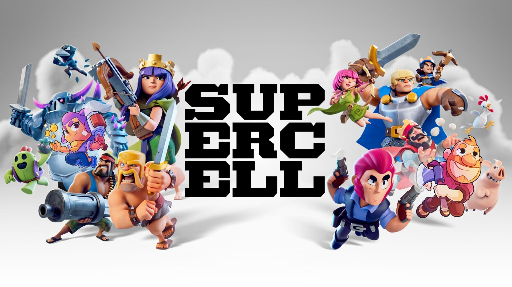
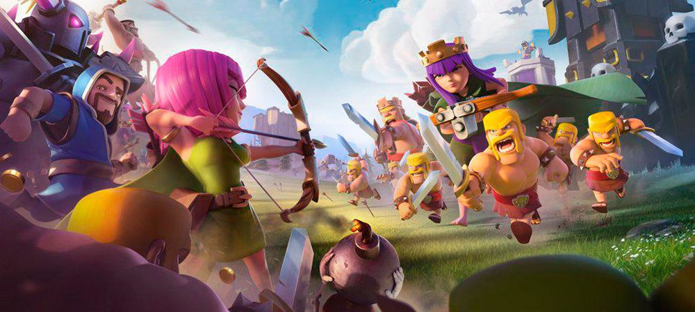
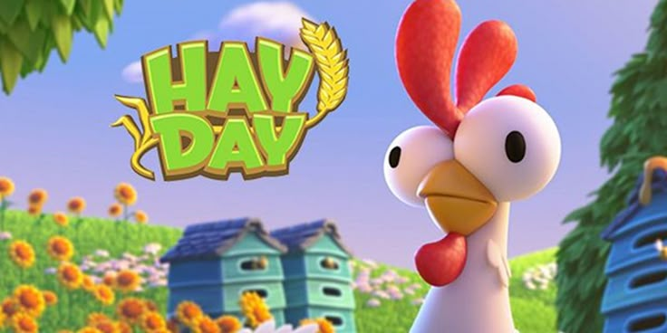
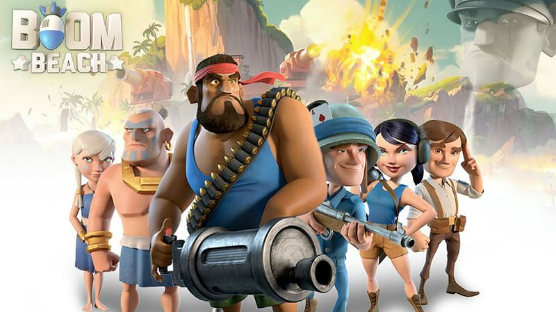
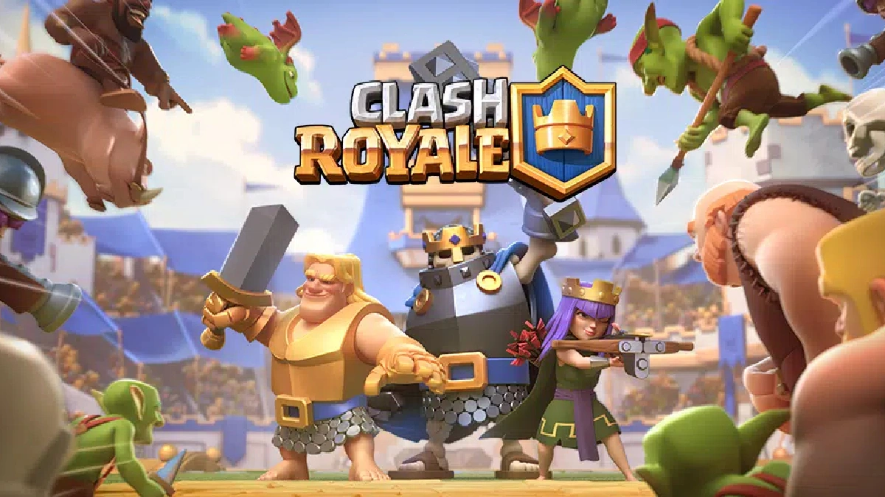
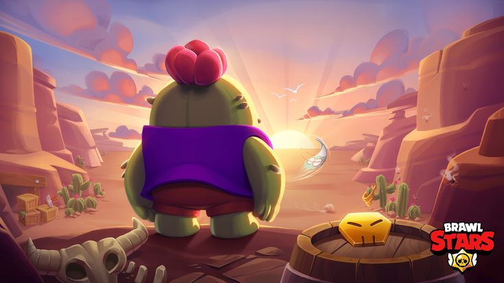
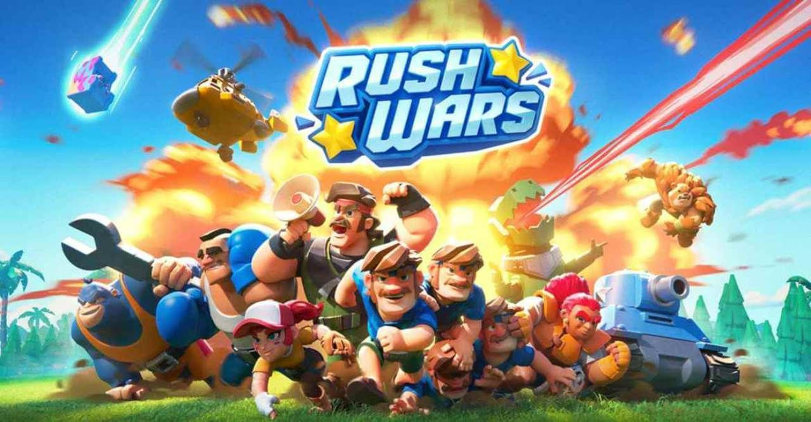

к другим играм SUPERCELL
Supercell
— финская компания-разработчик мобильных игр, основанная в 2010 году.
Она известна созданием популярных игровых проектов,
ставших международными хитами благодаря простоте геймплея
, качественному дизайну и возможности играть бесплатно (freemium-модель).

Clash of Clans
Игра была выпущена в августе 2012 года и стала настоящим феноменом среди геймеров.
Это стратегическая игра с элементами RPG, где игроки строят собственную деревню,
защищают её от нападений врагов и участвуют в PvP-битвах.
Основные элементы игры включают строительство базы,
развитие армии и участие в сражениях против других игроков.
Игроки объединяются в кланы, совместно выполняют задания и соревнуются друг с другом.
Игра поддерживает русский язык и доступна на iOS и Android.

Hay Day
Это симулятор фермы, выпущенный в июне 2012 года.
В игре пользователи управляют собственной фермой,
выращивая урожай, разводя животных и продавая продукцию другим игрокам.
Hay Day отличается яркой графикой и приятным музыкальным сопровождением.
Как и Clash of Clans, эта игра также бесплатна и поддерживается русским языком.

Boom Beach
Эта стратегия была представлена в марте 2014 года.
По своей сути Boom Beach похожа на Clash of Clans,
однако здесь акцент сделан на морские сражения и захват островов.
Пользователи создают свою базу на острове, развивают экономику и армию,
а затем отправляются покорять вражеские территории.
Эта игра тоже предлагает возможность играть вместе с друзьями и организовывать альянсы.

Clash Royale
Данная карточная баталия вышла в марте 2016 года.
Геймплей представляет собой дуэли между игроками,
цель которых — разрушить башни противника быстрее,
чем тот уничтожит ваши собственные.
Для победы используются различные карты с войсками,
заклинаниями и оборонительными сооружениями. Помимо одиночных матчей,
существуют турниры и кооперативные режимы.

Brawl Stars
Это многопользовательская аркада, вышедшая в декабре 2018 года.
Brawl Stars объединяет жанры MOBA и шутера,
предлагая быстрые матчи в различных режимах: от командных битв до захвата флага.
Каждый персонаж обладает уникальными способностями,
что добавляет разнообразие в игровой процесс.

Rush Wars
Новая мобильная стратегия, запущенная в сентябре 2023 года.
Rush Wars вдохновлена классическими играми серии Command & Conquer.
Игрокам предстоит строить военные базы,
развивать технологии и отправлять войска на завоевания территорий.
Доступна на iOS и Android, имеет простой интерфейс и увлекательные тактические битвы.
